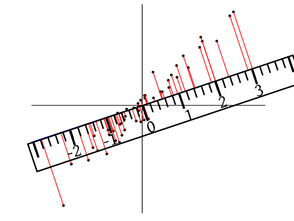
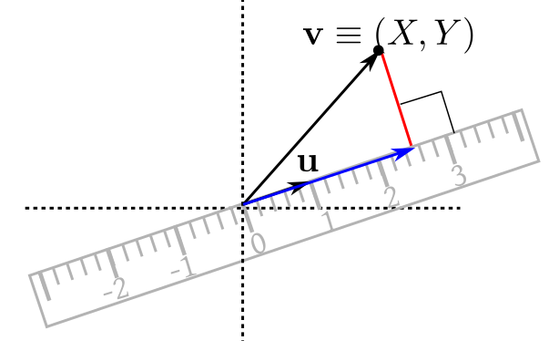

$\newcommand{\v}[1]{\boldsymbol{#1}}$
$\newcommand{\k}[1]{\chi^2_{(#1)}}$
$\newcommand{\cov}{\mathrm{cov}}$
[Update:[Thu Jul 09 IST 2026}
Expectation and variance of random vectors
If $X_1,...,X_n$ are jointly distributed random variables, then $\v X=(X_1,...,X_n)'$
is called a random vector, and is usually considered as an $n\times 1$ column vector. We define
$E(\v X)$ as
$$E(\v X) = \left[\begin{array}{ccccccccccc}E(X_1)\\\vdots\\E(X_n)
\end{array}\right].$$
The motivation is again from statistical regularity. If you take many IID replications of
$\v X$ and average them, then (under very general conditions) the average will converge to $E(\v X).$
The case of dispersion is slightly trickier. We shall start with the main definition and provide the motivation later.
A multivariate data set may appear to have different amounts of dispersion depending how you view
it. This 3D scatterplot, for example, will show this phenomenon
when you drag it with a mouse. The
dispersion matrix is a way to take all possible viewpoints into account.
To
motivate the definition of
dispersion matrix consider the
bivariate case. Let the
two components of our random
vector be $X$ and $Y.$ If we take
many IID replications, we get points like $(X_1,Y_1),...,(X_n,Y_n).$ Think of these like a scatterplot.
If you look at this cloud of points from position A, then the points appear more scatterred than when we look from B. This
is an interesting feature of multivariate dispersion, it depends on how you look at it. A good measure of dispersion
should not depend on the direction you are looking from, rather it should capture the comprehensive picture,
from which we should be able to work out the dispersion from any desired direction. To achieve
this, imagine a ruler placed on the scatterplot with its 0 mark at the origin. See this
demo for better understanding. Parallel rays of
light are shining perpendicularly down on the ruler from both
sides, casting shadows of the points on the ruler:

Light rays (shown in red) are dropping perpendicularly on the ruler
Then each bivariate point reduces to a single number along the scale, and we may compute variance of the numbers to measure
the dispersion when looking from that particular direction. To quantify the placement of the ruler, imagine a unit
vector $\v u$ along the
ruler from its 0 mark (at the origin) reaching up to its 1 mark.

Projecting a typical point perpendicularly on the ruler
Then
a point $\v v \equiv (X,Y)$
will project to the vector
$$\frac{\v v'\v u}{\v u'\v u} \v u,$$
shown in blue. Measured in units of $\v u$, this will show up at the mark $\frac{\v v'\v u}{\v u'\v u}$ of the ruler.
Now, $\frac{\v v'\v u}{\v u'\v u} = pX+qY$ for some $p,q\in{\mathbb R}.$
Then the
variance of $pX+qY$
will be $p^2 V(X)+q^2 V(Y) + 2pq\, cov(X,Y),$ which may be written as (check!)
$$\left[\begin{array}{ccccccccccc}p & q
\end{array}\right]\left[\begin{array}{ccccccccccc}V(X) & cov(X,Y)\\cov(X,Y) & V(Y)
\end{array}\right]\left[\begin{array}{ccccccccccc}p\\q
\end{array}\right].$$
Here $p,q$ are controlled by the ruler. Notice that the matrix in the middle does not
involve $p,q.$ Thus, it contains
information about dispersion for every
possible way of placing the ruler.
This matrix is indeed the dispersion matrix we defined above.
EXERCISE 5: Consider the toy bivariate data set $(1, 2), (3, 4), (2.1, 3.1), (4, 5).$ Draw the
scatterplot. Imagine that we are looking down as shown. Guess the variance as seen from that
direction. Check your guess by actual computation.
EXERCISE 6: Let the dispersion matrix of $(X,Y)$ be $\left[\begin{array}{ccccccccccc}1 & 0\\0 & 2
\end{array}\right]$. Find
$\theta\in [0,\pi)$ such that $V(\cos (\theta) X + \sin(\theta) Y)$ is maximum. When is the variance minimum?
The following facts are immediate from the definition.
Proof:
Let $\v Y = A\v X+\v b.$ Then $\v Y = (Y_1,...,Y_m)'$, where $Y_i = \sum_j a_{ij}X_j + b_i.$ Here I have
denoted the $(i,j)$-th entry of $A$ by $a_{ij}.$
Now compute $E(Y_i)$ and $cov(Y_i,Y_j)$ directly to get the result.
By the way, the $(i,j)$-th entry of $A\Sigma A'$ is $\sum_r\sum_s a_{ir} \sigma_{rs} a_{js}.$
[QED]
Proof:
By the last theorem, $\v\ell'\Sigma\v\ell=V(\v\ell'\v X)\geq 0.$
[QED]
The converse is also true:
Proof:
Let $U_1,...,U_n$ be independent with $\forall i~~V(U_i)=1.$ Then $\v U=
(U_1,...,U_n)'$ has $V(\v U) = I_n.$
Since $\Sigma$ is NND, hence $\Sigma = AA'$ for some $A_{n\times n}.$
Let $\v X = A\v U.$ Then $V(\v X) = A I_n A' = AA' = \Sigma.$
[QED]
EXERCISE 7: Show that for $\left[\begin{array}{ccccccccccc}a & b\\b & c
\end{array}\right]$ to be a dispersion matrix, a necessary
condition is that $b^2\leq ac.$ Is it a sufficient condition?
EXERCISE 8: Show that $V(\v X)$ is singular if and only if $P(a_1X_1+\cdots+a_n X_n=c)=1$ for
some constants $a_i$'s and $c$ such that not all $a_i$'s are zero.
EXERCISE 9: If $\v X=(X,Y)'$ and $V(\v X)$ is a singular, then how will a scatterplot of
replications from $\v X$ look like? Here we are running the random experiment underlying $\v
X$ repeatedly, and getting $(X_1,Y_1), (X_2,Y_2),...,(X_n,Y_n),$ and plotting these
$n$ points as a scatterplot. Your job is a to identify some geometric pattern in the plot.